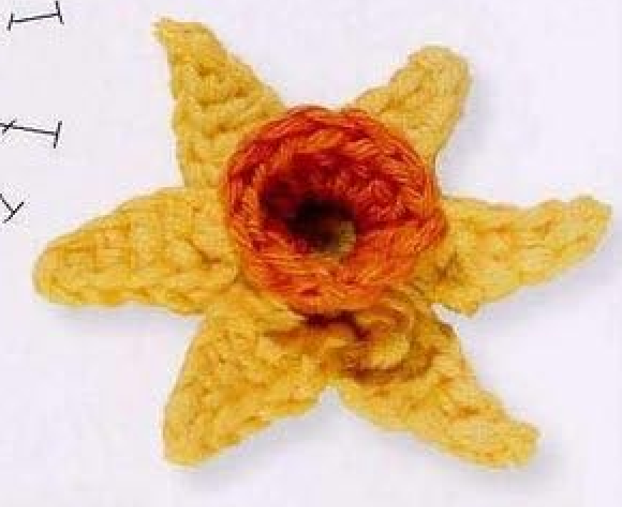
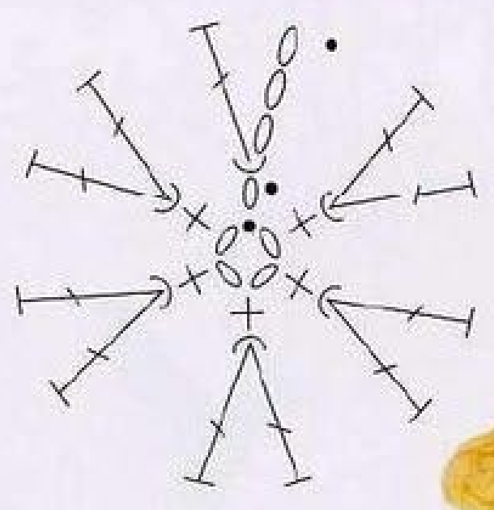
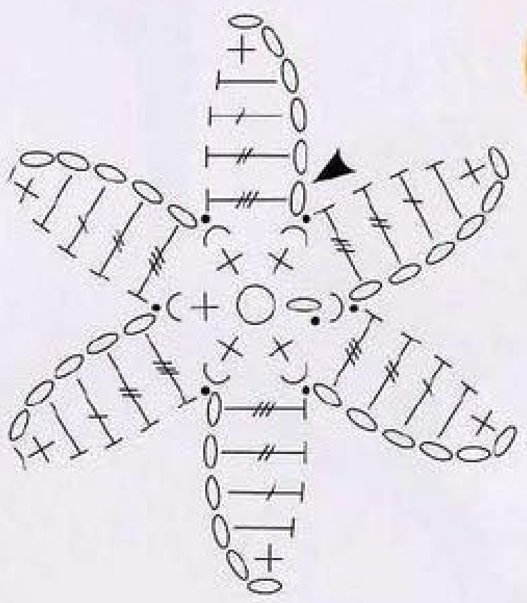
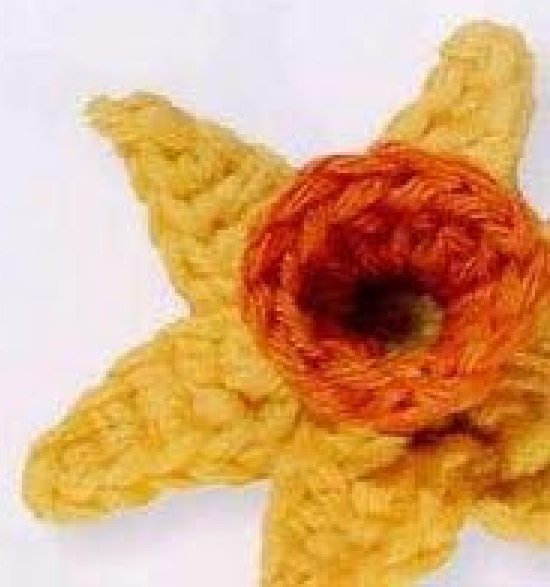
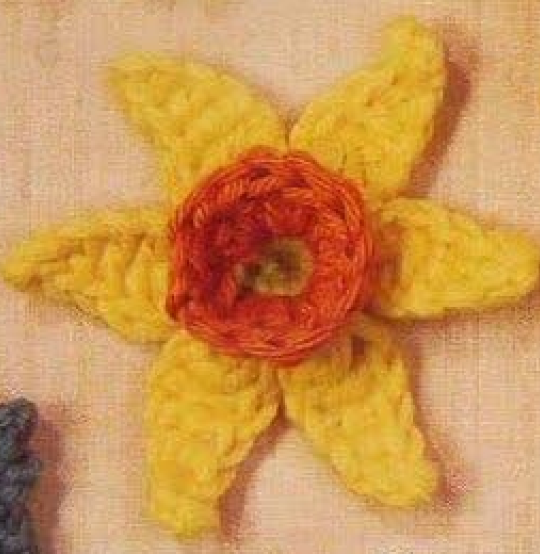

Crochet Narcissus has six pointed yellow petals arranged behind a small orange cup. The cup and petals share the first pale-green center round, using its front and back strands separately. This guide follows pattern 71 in Lesley Stanfield’s 100 Flowers to Knit & Crochet, preserving the complete source construction in US terms and illustrating it with the original center and petal charts plus finished-work photographs.

Key Takeaways
- Use DK cotton in pale green A, orange B, and yellow C.
- The first center round has six counted positions.
- The orange cup uses front strands and has twelve counted positions.
- Yellow petals use the remaining back strands of that original first round.
- Each six-chain petal returns with sc, hdc, dc, tr, and dtr.
- Make six petals and finish the last anchor in the original yellow joining position.
CROCHET NARCISSUS FLOWER PATTERN
Project: One six-petal cotton flower with an orange cup and pale-green base. The source groups this entry among intermediate designs. US terms are used; finished measurements, hook, gauge, and total quantity are not specified.
| Skill level | Intermediate in the source. Practical focus: front/back strand separation, very tall stitches, and petal placement behind a cup. |
|---|---|
| Base size | 1 flower with 6 yellow petals and 1 orange cup. Dimensions are not specified. |
| Yarn | DK cotton: pale green A, orange B, yellow C. |
| Quantity, hook, gauge | Not specified. Choose a hook suited to the cotton and assess a complete center and petal. |
| Notions | Scissors and a blunt needle for securing ends. |
| US abbreviations | ch = chain; sc = single crochet; hdc = half double; dc = double; tr = treble; dtr = double treble; sl st = slip stitch; RS = right side. UK dc = US sc; UK htr = US hdc; UK tr = US dc; UK dtr = US tr; UK trtr = US dtr. |
| Center foundation | With A, ch 4 and join with a sl st into a ring. |
| Center round 1, RS | Ch 1, 5 sc in the ring. With B, sl st in the starting ch 1. 6 counted positions. Continue B. |
| Center round 2, front strands | Ch 3. Working in the front strand of each first-round position, dc in the stitch below, 2 dc in each of the next 5 sc, sl st in the 3rd chain of the starting ch 3. 12 counted positions. Fasten off invisibly. |
| Yellow petals, back strands | Keep the left thumb inside the center with RS facing. Work in the back strand of each position of the first round. Join C in a first-round sc; [ch 6, skip 1 chain, sc in the next chain, hdc in the next, dc in the next, tr in the next, dtr in the next, sl st in the next first-round position] 6 times. End with a sl st in the same position as the yellow join. Fasten off. |
| Complete construction | Pale-green six-position base, orange front-strand cup, and six yellow back-strand petals. No additional trumpet rounds, stem, leaf, or sewn stamens are supplied. |
Understand the Cup and Star-Shaped Petals
Narcissus begins with a four-chain ring and a small pale-green single-crochet round. That round supplies six counted positions. The orange cup is worked into its front strands, leaving the back strands available for the yellow petals behind it.
Each petal is made by chaining outward and working back along that chain with progressively taller stitches. Its narrow tip starts with the single, followed by half double, double, treble, and double treble toward the base. The completed petal is anchored in the next first-round position.
The source also contains a separate Daffodil entry nearby in the directory. That other flower does not add rounds or finishing to Narcissus. Preserve this pattern’s short orange cup and six graduated petals rather than borrowing a longer trumpet or ruffled rim from a different recipe.
Prepare DK Cotton and Finishing Tools
Use pale-green A, orange B, and yellow C DK cotton. The pale green is concentrated at the base, orange forms the upright cup, and yellow makes the six surrounding petals. Have the colors ready in that order so the center join can introduce orange cleanly.
The entry gives no hook size, numerical gauge, total quantity, or finished flower dimensions. Choose a hook suited to your cotton and examine the completed center before making all six petals. The cup should stand above the base while the unused rear strands remain accessible.
Different cotton twist, hook sizes, and individual tension can change how firmly the cup stands and how broad the petals look. If the flower must fit a measured applique area, finish one complete sample before planning several copies. Do not treat a general cotton label gauge as a supplied motif measurement.
Keep scissors and a blunt needle ready for end securing. The source does not call for a separately sewn center, leaf, stem, wire, or bead. These would be optional additions to a larger project, rather than required materials for this flower’s original construction.
US Terms and Graduated Stitch Heights
The original uses UK terminology. Double crochet becomes US single, half treble becomes half double, treble becomes double, double treble becomes treble, and triple treble becomes double treble. The petal therefore includes five different US stitch heights.
For a US treble, yarn over twice before insertion and complete three successive draw-through-two steps after drawing up the loop. For a US double treble, yarn over three times and complete four such steps. Each is finished independently before moving to the next chain placement.
There is no partial-stitch cluster in this petal. The graduated return uses one complete stitch in each of five separate chain bases after skipping one. Combining the tops into a cluster or putting all five stitches in one chain changes both the petal length and outline.
Terminology checkpoint: The return order is US sc, hdc, dc, tr, dtr. The final US double treble comes nearest the flower base, not at the narrow outer tip.
Step 1: Make the Pale-Green Six-Position Base
With A, chain four and join with a slip stitch into a ring. With the right side facing, chain one and work five singles into the ring. These actual singles are worked around the ring rather than one into every chain of the foundation.
Use orange B to slip stitch into the starting chain one. The source counts six positions: the opening chain and five actual singles. Continue with B for the cup. Keep the starting chain position identifiable, because both front and back routes use this first-round foundation.
Count the six-position total before moving on. Do not add a sixth actual single and then count the chain as a seventh position. The later orange doubling and six-petal route depend on the source’s six counted positions rather than seven actual bases.
Step 2: Identify Front and Back Strands
With the right side facing, identify the two top strands of each first-round position. The front strand is the near strand used by the orange cup, while the back strand remains behind for the yellow anchors. Keep the same orientation while working around the center.
The orange round must not catch both top strands by habit. Doing so can make the cup look plausible but leave the rear strand route trapped. Separate the strand pickup deliberately at each placement, especially at the small starting-chain position.
Do not assume that the yellow petals later attach to orange stitch tops. They return to the first pale-green round’s unused back strands. This shared foundation is what places the cup in front and the six petals behind it without a separate sewn backing.
Strand checkpoint: Orange uses front strands of the first center round. Yellow uses the remaining back strands of that same round, rather than the orange cup edge.

Step 3: Double the Front Route into the Orange Cup
Chain three with B. Working in the front strand, make one double in the stitch directly below the rise. Work two doubles in each of the next five actual first-round singles. The rise and double below account for the first two positions, and the five pairs supply ten more.
Slip stitch into the third chain of the starting three-chain rise. The source’s total is twelve counted positions. The named third-chain closure matters: joining into the first chain would pull the cup edge downward and change its height at the seam.
Fasten off invisibly. No extra orange plain round, increase round, or picot rim is printed for Narcissus. Let the paired doubles form the short cup and keep its inside accessible for the later thumb-supported petal work.
Step 4: Hold the Center and Join Yellow Behind It
Keep the left thumb inside the center and the right side facing, as the source directs. This supports the cup while making the rear foundation easier to reach. Move the orange stitches gently aside as needed to identify the pale-green back strands beneath them.
Join C in the back strand of a first-round single. The source names a single from that original round, not a double on the orange cup. Note this yellow starting position so that the sixth petal can return to the same place at the end.
The six counted positions include the original starting-chain position. Follow the first-round route around the center without inventing a new seventh anchor. If a strand looks difficult to enter, inspect its position from the back instead of moving to a convenient orange stitch.
One Small Round Carries Two Different Structures
The orange doubled front route creates the cup, while the unused back route supports six chain-return petals. Both depend on the original six-position pale-green round. Keeping that foundation visible prevents the yellow anchors from drifting onto the twelve-position orange rim.
Step 5: Chain Outward for the First Petal
Chain six with C and skip the chain nearest the hook. The remaining five chains receive the five graduated return stitches. Keep these chain bases readable while the cup rests against the thumb; tight chains can make the taller final stitches awkward to enter.
This is an outward-and-return petal. It does not leave an empty six-chain loop or fill a ring space with a fan. The original petal chart shows distinct stitch heights along the chain, with the shortest stitch near the skipped tip chain.
Use consistent chain tension for all six petals. If one foundation feels too short, count its six chains before adding another. An extra chain would change the return route and produce a different length rather than correcting a missing or overly tight chain.
Step 6: Work the Graduated Five-Stitch Return
Work one single in the next chain, one half double in the next, one double in the next, one treble in the next, and one double treble in the next. Each stitch has its own chain base and is completed independently.
The increasing heights widen the petal toward the flower base. The tallest final double treble sits nearest the center, while the single stays at the narrow outer end. Reversing the sequence would create a different tapered shape even though the same stitch names were used.
Keep the petal free of the orange rim as you work back. Catching the cup with an accidental extra stitch can tether the yellow edge to the front. The source anchors the completed return only at the next first-round back-strand position.
Step 7: Anchor in the Next Original Position
Slip stitch in the next position of the first center round, using its back strand. This completes the first petal and advances the working yarn around the pale-green foundation. Do not anchor back into the same yellow joining position after every petal.
Keep the slip stitch compact enough to secure the petal without drawing its tall base into the cup. The orange front route remains above and in front, while the new yellow petal sits behind. Spread the completed petal gently to check its graduated chain return.
Count the petal as one completed outward-and-return section, not as five petals because it contains five different stitches. The finished total is six such sections. Tracking the original anchor positions makes that count easier as the rear strand route becomes partly covered.

Step 8: Repeat for Six Petals and Close at the Join
Repeat the entire six-chain foundation, five-stitch return, and next-position slip stitch six times in total. Every petal uses sc, hdc, dc, tr, and dtr in that order. The first petal is included in the six, so make five additional sections after it.
End with a slip stitch in the same original first-round position where C was joined. This closes the rear route after all six foundation intervals have been used. Do not add another petal or move the final closure onto an orange cup stitch.
Fasten off and secure the yellow end on the back. Keep the last join unobtrusive so it does not look like an extra petal tip or pull the first and sixth petals together. Arrange all six around the cup before trimming ordinary ends.
Petal checkpoint: Six complete return sections finish at the original yellow joining position. Each uses the back-strand route of the first round, not the cup’s twelve-position rim.

Step 9: Inspect and Gently Shape the Finished Flower
Check the pale-green base, short orange cup, and six yellow petals from front and back. The cup should remain open rather than collapse into a flat orange disc. Gently support it while arranging the petal bases, without adding extra stitches to prop it up.
The source does not supply a separate numerical blocking measurement or pressing instruction for this entry. Arrange the cotton lightly and follow care appropriate to your chosen yarn if you decide to shape it further. Treat such finishing preferences as practical choices rather than source specifications.
Inspect the ends before trimming them. A visible green center is normal at the base of the cup, and the orange rim is a single doubled round. A long ruffled trumpet, extra petal layer, or new center ornament would be a variation rather than the finished Narcissus described here.

Troubleshoot the Cup and Rear Anchors
The yellow strands are hard to reach
Check whether the orange doubles accidentally caught both strands of the first round. The back strands must remain available behind the cup. Joining the petals onto the orange tops may be easier temporarily, but it changes their foundation from six positions to twelve and does not follow the printed route.
The cup has fourteen stitches
Review the counted starting rise and double below it. The five paired increases supply ten actual doubles, not twelve, because they use the five actual singles. Adding a sixth pair after those singles would exceed the specified twelve-position cup total.
A petal points the wrong way or looks too broad at its tip
Check the graduated return order. The single is nearest the skipped tip chain and the double treble is nearest the center. Reversing that progression or placing several stitches in one chain changes the triangular outline shown in the original chart.
The final petal has no closing position
Count the six first-round positions and inspect the initial yellow join. The last slip stitch returns there after six petal sections. An anchor made into an orange stitch, a repeated same-base closure, or an extra seventh petal can disrupt that final route.
Optional Colors and Decorative Use
Other cotton colors can be optional substitutions while preserving the three original roles and all strand placements. These are personal choices rather than additional source colorways. Different cotton thickness or hook choices may change the dimensions, so finish a sample before planning a measured group of motifs.
Suggested uses include a spring floral applique on a bag or textile panel. These are added placement ideas, not complete accessory projects supplied with Narcissus. Attach through stable back or center stitches, leaving the orange cup and six yellow tips free to retain their dimensional outline.
The neighboring Daffodil is a separate pattern, and the adjacent Citrus Leaf is a knitting entry. Neither supplies extra instructions for this crochet flower. Keep any combined arrangement’s component recipes distinct rather than treating nearby directory objects as missing Narcissus pieces.
Narcissus at a Glance
- DK cotton in pale green, orange, and yellow.
- Six-position pale-green first center round.
- Twelve-position orange front-strand cup.
- Six yellow back-strand petals with graduated five-stitch returns.
- Final rear-route join at the original yellow starting position.
Conclusion
Narcissus combines a doubled front-strand cup with a six-position rear petal route. Preserve the back strands while making the orange round, then return each yellow chain with increasing stitch heights and anchor in the next original position. The compact card includes the complete source recipe in US terms. Click the Pin to see the pattern again and use both charts while making the flower.
Source and Tags
Source: Lesley Stanfield, 100 Flowers to Knit & Crochet, pattern 71 Narcissus. Instructions and charts are on printed page 85, PDF page 79; the directory example is on printed page 38, PDF page 33. All photos show completed work, with one instruction example partly outside the scan. US translation and additional practical guidance accompany the original construction.
Crochet NarcissusSix-Petal FlowerOrange CupFront and Back StrandsCotton CrochetUS Crochet Terms